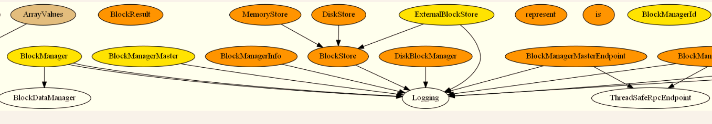

使用scaladiagrams工具构建scala项目的UML图
背景
阅读spark源码到storage这一块的时候，由于类的继承，调用之间的关系比较复杂，想要画一下UML图，idea自带的diagrams方法对java支持很好，但对scala的一些继承关系支持不佳，因此google了一下有没有可以画scala UML类图的工具，还真找到了：
我是在x64 windows10下面，使用gitbash工具作为shell命令行，亲测可用
clone开源项目scaladiagrams并安装
|
|
安装graphviz工具
graphviz是一个开源的图形可视化软件，矢量图生成工具，与其他图形软件所不同，它的理念是“所想即所得”，通过dot语言来描述并绘制图形。
http://www.graphviz.org/Download_windows.php
如上链接下载，然后安装即可，将安装路径加入path中，该工具的目的是通过scaladiagrams工具生成的依赖关系画图；
使用
生成依赖关系文件dotFile
|
|
dotFile文件就是依赖关系的文件：
官方命名为 dot语言，是一个表示图的语言，挺好玩的：
|
|
使用graphviz工具画图
生成svg文件，文件比较大的话建议用这个
生成png文件
画的效果部分截图如下（就是图有点扁平）：

因为好玩，又画了一个spark_core的类图，太大了，不好看，为了部分解决这个问题，只要在dot文件的第一行加入
即可使得图片稍微好看一点
引用：
http://stackoverflow.com/questions/7227952/generating-uml-diagram-from-scala-sources
https://github.com/mikeyhu/scaladiagrams
http://www.graphviz.org/About.php
http://www.graphviz.org/pdf/dotguide.pdf
http://www.tonyballantyne.com/graphs.html